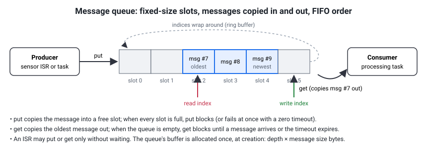

Message queues
A message queue moves data and synchronises in one operation. Designs built from tasks that own their data and talk through queues have far fewer shared-state bugs than designs built from shared variables and locks.
- Define a message queue and the blocking behaviour of send and receive.
- Explain copy semantics and the alternative of passing pointers with ownership transfer.
- Size a queue from the producer rate and the worst-case consumer delay.
- Choose and implement a policy for a full queue, especially when the producer is an ISR.
- Explain how message passing removes the need for locks on shared data.
The concept
Message queue: a kernel-managed FIFO buffer with a fixed number of slots of fixed size. Send copies a message into a free slot, blocking (up to a timeout) if the queue is full. Receive copies the oldest message out, blocking (up to a timeout) if the queue is empty. Each operation wakes a task waiting on the opposite side.

A queue is a counting semaphore that carries data: the number of messages is the count, and a receive is a take that also delivers a payload. That is why one queue replaces the common, fragile pattern of "shared variable + semaphore + mutex".
Copy versus reference
- By copy (the default): the sender's data is copied into the queue, and out again to the receiver. The sender may reuse its variable immediately. Simple and safe; costs two copies per message, so keep messages small (a few to a few dozen bytes).
- By reference: the message is a pointer to a buffer (for example from a fixed-block memory pool). Only the pointer is copied. The rule that makes it safe is ownership transfer: after sending, the sender must not touch the buffer; the receiver now owns it and is responsible for returning it to the pool. Use this for large payloads such as packets or image lines.
The full-queue policy
Every design must answer: what happens when the producer is faster than the consumer for longer than the queue can absorb?
| Policy | How | Suits |
|---|---|---|
| Block the producer | Send with a timeout or forever | Producer is a task, and back-pressure is acceptable |
| Drop the newest | Send with no wait; on failure count the drop | ISR producers, telemetry |
| Drop the oldest | Discard one message at the head, then send | "Latest value matters most" streams |
| Overwrite a one-slot queue | Depth 1, always replace | Publishing the current state, not a history |
An ISR cannot block, so an ISR producer always needs a non-blocking policy and a drop counter you can inspect in testing.
When to use a queue
- Passing samples, commands, events with parameters, or packet descriptors between tasks, or from an ISR to a task.
- Decoupling rates: a bursty producer and a steady consumer.
- The gatekeeper (or active object) pattern: one task owns a resource and receives requests through its queue. No other task touches the resource, so no lock is needed (Lesson 10 shows how this also removes a deadlock condition).
When not to use a queue
- For a pure signal without data: a semaphore, notification or event bit is lighter.
- For large payloads by copy: the copying costs CPU and doubles the RAM. Pass references instead.
- When the consumer needs only the latest value of something that changes faster than it reads: a depth-1 overwrite queue, or a protected variable, is clearer than a deep queue of stale values.
- For request/response where the sender must wait for the answer: you need two queues (or a reply semaphore). A single queue does not return results.
Worked example: sizing a sensor queue
An IMU interrupt delivers a 12-byte sample (3 axes × 2 sensors × 16 bit) every 1 ms. The ISR sends each sample to the fusion task with no wait.
- Average throughput. The fusion task takes 0.3 ms per sample, so on average it keeps up (30 % load).
- Worst-case consumer delay. Higher-priority work (a 5 ms radio burst and a 4 ms control update that can coincide) can keep the fusion task off the CPU for up to 9 ms. In 9 ms, 9 samples arrive.
- Depth. At least 9 messages, plus margin: choose 16. Memory: 16 × 12 = 192 bytes.
- Policy. The ISR uses no-wait sends and increments a drop counter on failure. A drop count above zero in testing means the delay analysis was wrong.
The general rule: depth ≥ arrival rate × longest time the consumer can be unavailable, provided the consumer's average service rate exceeds the arrival rate. If it does not, no depth is enough.
How it differs from the other primitives
| Compared with | Difference |
|---|---|
| Counting semaphore | Both count; a queue also carries a payload per unit and has a fixed capacity on the send side that can block. |
| Event group / notification | Those carry state bits or one word; a queue carries ordered, distinct messages, each consumed once. |
| Mutex + shared variable | Shared variable: everyone sees the latest value, with locking. Queue: each consumer receives each message once, with no shared state. |
Common mistakes
- Sending a pointer to a local (stack) variable. By the time the receiver reads it, the sender's stack frame has been reused.
- Touching a buffer after sending its pointer. Ownership has moved; the sender and receiver now race on it.
- Sizing by guesswork. Too shallow drops data under load; too deep hides an overloaded consumer and adds latency. Size from rates and worst-case delays.
- Ignoring send failures in ISRs or no-wait sends. Count them.
- A high-priority task blocking forever on send to a slow, low-priority consumer. Its response time now depends on the consumer: priority inversion through a queue.
- Several consumers on one queue expecting per-consumer ordering. Each message goes to one receiver; which one depends on priority and timing.
What this becomes in Zephyr
struct k_msgq and relatives
K_MSGQ_DEFINE(name, msg_size, max_msgs, align)ork_msgq_init()with your own buffer. Messages are copied.k_msgq_put(&q, &msg, timeout)andk_msgq_get(&q, &msg, timeout)return 0,-ENOMSG(no wait, or the queue was purged) or-EAGAIN(timeout). Both are ISR-safe withK_NO_WAIT.k_msgq_peek()reads without removing,k_msgq_purge()empties the queue,k_msgq_num_used_get()/k_msgq_num_free_get()report fill level (useful to measure the worst case in tests).- For pointer passing:
k_fifo/k_lifolink caller-provided items (the first word of each item is reserved for the kernel), combined with ak_mem_slabfixed-block pool. Other kernel objects for other shapes of data:k_pipe(byte streams),k_mbox(synchronous exchange), and the zbus subsystem (publish/subscribe).